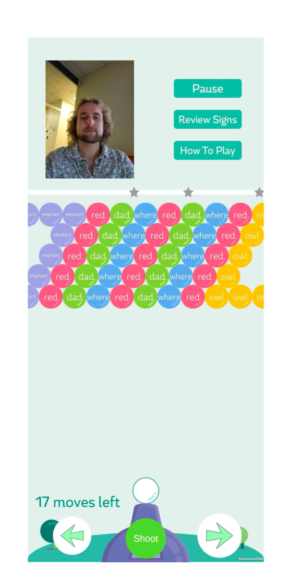
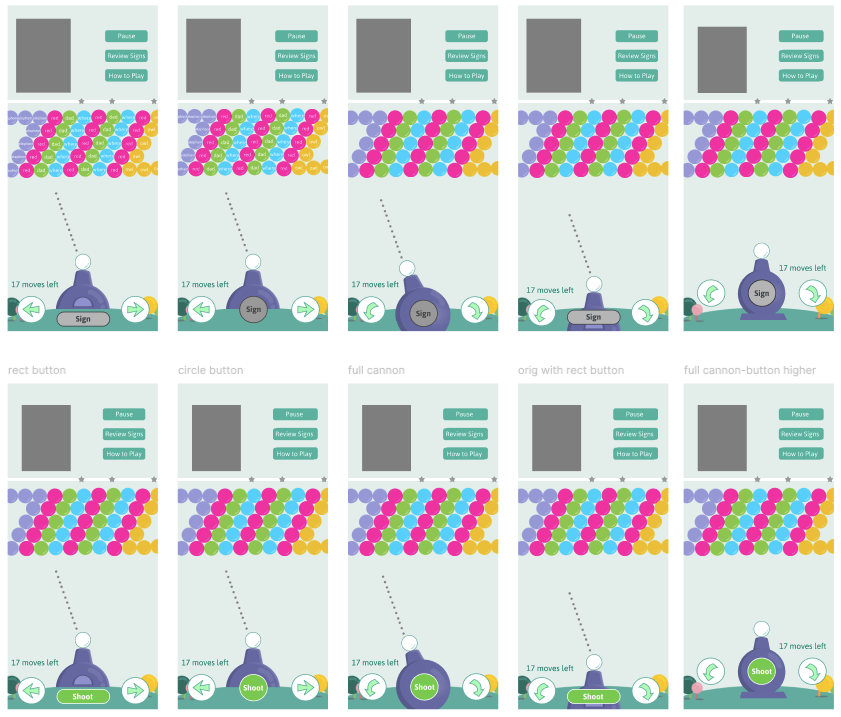

PopsignAI Redesign
- Team:
- 2 UI designers, 3 UX researchers, 2 developers
- Duration:
- November 2024
- Contribution:
- Design different iterations of shoot button
- Tools:
- Figma
Context
PopSignAI is an educational bubble shooter game developed by the Georgia Institute of Technology and RIT/NTID’s Center on Access Technology.
The game teaches over 500 American Sign Language (ASL) signs by allowing the users to sign.
Research
Main Points
Our team's UX researchers conducted user testing on Popsign's shooting mechanics. The main points of feedback included:
01
Location of shoot button:
many users had difficulty locating the button at the very bottom of the screen

02
Color of shoot button:
users found it challenging to read the text against the bright green button
Analysis
Given these feedbacks, I identified some additional issues and brainstormed possible fixes.
- Position:
- The bottom of the screen is too clustered.
We can move the shoot button up to make it clear and avoid user fingers from covering it up while playing the game.
- Arrow button position:
- The arrow buttons also overlap with the background trees. Outlining it can help create a separation between background and button.
- Color:
- The green of the shoot button seemed to blend in with the cool purple color of the cannon. By creating an outline around the button, the shoot button can be more visible.
- Arrow button design:
- Although the arrow buttons rotate the cannon, the current arrow button designs make it seem like the cannon will move left to right.
- Shape:
- The multiple circular shapes on screen made it difficult for the shoot button to stand out. We can try changing the shoot button to a rectangular shape.
- Association between button and cannon:
- The shoot button is awkwardly placed on top of the cannon, making the connection between the cannon and the shoot button weak.
Design
Iterations
In Figma, I then created different iterations that combined these solutions.

The main fixes that I implemented were
- Make the association between cannon and button stronger
- Outline the buttons
- Change arrow shape to make it look like rotations
- Move the buttons up considering people hand placement
- Create two different states to indicate when it is ready to shoot the bubble
After showcasing these iterations to the developers and UX researchers, our team most favorably chose the second design and the last design